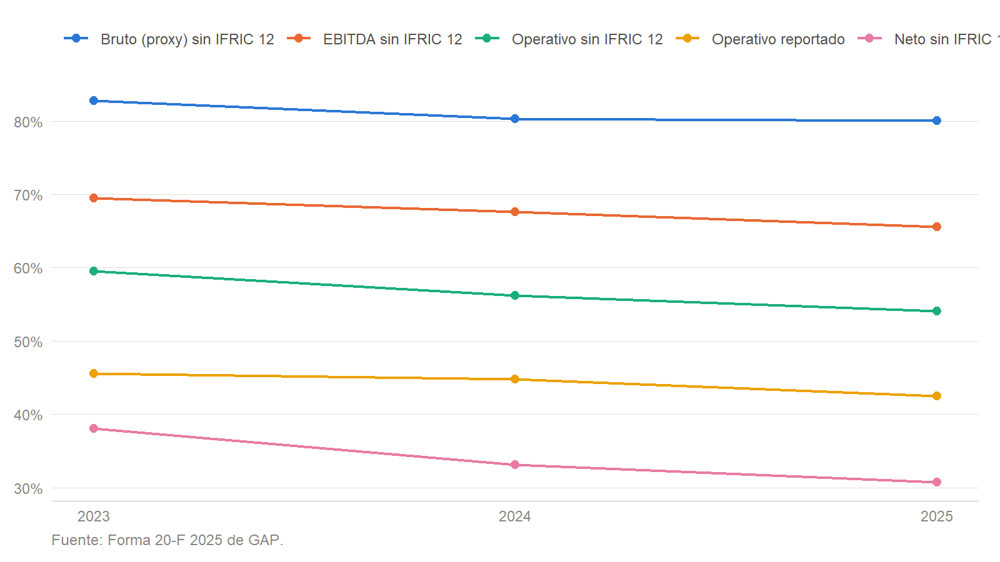
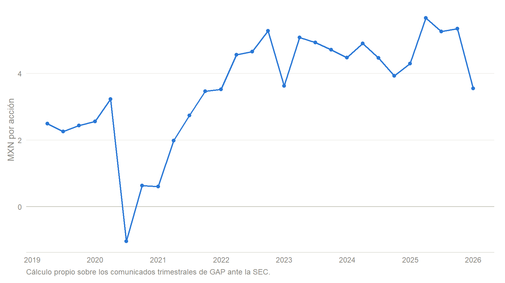

| Aeropuerto | Plaza | Pax 2025 | Pax 2024 | Var. anual | % de la red | Vencimiento |
|---|---|---|---|---|---|---|
| Guadalajara | Jalisco | 18,696.6 | 17,848.7 | 4.8% | 29.4% | 2048 |
| Tijuana | Baja California | 12,650.0 | 12,545.8 | 0.8% | 19.9% | 2048 |
| Los Cabos | Baja California Sur | 7,529.9 | 7,488.1 | 0.6% | 11.8% | 2048 |
| Puerto Vallarta | Jalisco | 6,947.7 | 6,803.5 | 2.1% | 10.9% | 2048 |
| Montego Bay | Jamaica | 4,469.1 | 5,057.1 | -11.6% | 7.0% | mar-2034 |
| Guanajuato (Bajío) | Guanajuato | 3,301.5 | 3,169.0 | 4.2% | 5.2% | 2048 |
| Hermosillo | Sonora | 2,203.1 | 2,156.7 | 2.2% | 3.5% | 2048 |
| Kingston | Jamaica | 1,841.2 | 1,777.2 | 3.6% | 2.9% | oct-2044 |
| Morelia | Michoacán | 1,508.1 | 1,304.6 | 15.6% | 2.4% | 2048 |
| La Paz | Baja California Sur | 1,337.6 | 1,206.0 | 10.9% | 2.1% | 2048 |
| Mexicali | Baja California | 1,272.1 | 1,034.1 | 23% | 2.0% | 2048 |
| Aguascalientes | Aguascalientes | 984.1 | 961.8 | 2.3% | 1.5% | 2048 |
| Los Mochis | Sinaloa | 713.6 | 585.2 | 21.9% | 1.1% | 2048 |
| Manzanillo | Colima | 231.2 | 218.4 | 5.9% | 0.4% | 2048 |
El activo y su negocio
Grupo Aeroportuario del Pacífico · BMV: GAPB
1 Introducción
Esta primera etapa caracteriza a Grupo Aeroportuario del Pacífico, S.A.B. de C.V. (GAP) antes de modelar el riesgo de mercado de su acción serie B. El análisis combina la estructura económica del negocio con resultados consolidados de 2023 a 2025, indicadores de rentabilidad y apalancamiento, utilidad trimestral por acción y política de distribuciones. La lectura conjunta muestra una concesionaria con alta generación operativa y crecimiento, aunque expuesta a regulación tarifaria, tráfico aéreo, deuda y grandes compromisos de inversión. El análisis se contrasta además con ASUR y OMA, las dos concesionarias comparables del mercado mexicano, para separar lo que corresponde al sector de lo que corresponde a las decisiones financieras de este emisor en particular.
Criterio de fuentes
ITESO confirmó que la licencia institucional de FactSet no incluye acceso por API. El repositorio acepta exportaciones manuales de FactSet en data/raw/factset/manual/ y las conserva fuera de Git; en su ausencia, cada cifra de este reporte se reconstruye desde el documento primario que la publica. Los estados anuales provienen de la Forma 20-F de 2025 (Grupo Aeroportuario del Pacífico, 2026b), que presenta 2023, 2024 y 2025 sobre una misma base contable, y la serie trimestral proviene de los veintiocho comunicados de resultados que GAP presentó ante la SEC entre 2019 y 2026. El manifiesto config/filings.yml registra qué documento sustenta cada periodo y analysis/06_ingest_gap_filings.R reconstruye ambos conjuntos de datos; el informe nunca consulta una API durante el renderizado.
Tres bloques de cifras quedan fuera de ese pipeline y se transcriben directamente del documento que las publica, por lo que llevan su fuente señalada en el propio chunk: el estado de flujos de efectivo y el desglose de ingreso, costo y resultado financiero, tomados de los estados financieros en XBRL de la misma Forma 20-F; el tráfico por aeropuerto, tomado del comunicado de diciembre de 2025 (Grupo Aeroportuario del Pacífico, 2026d); y las cifras de ASUR y OMA, tomadas de sus respectivas Formas 20-F de 2025 (Grupo Aeroportuario del Centro Norte, 2026; Grupo Aeroportuario del Sureste, 2026). Ninguna de ellas se recalcula.
2 Descripción general del activo y del negocio
GAP administra infraestructura aeroportuaria bajo concesión y su negocio consiste en cobrar por el uso de un espacio que no puede replicarse ni trasladarse. Opera doce aeropuertos en el occidente y noroeste de México —entre ellos Guadalajara, Tijuana, Puerto Vallarta, Los Cabos, La Paz y Manzanillo— y los aeropuertos de Montego Bay y Kingston en Jamaica. La sociedad surgió del proceso de privatización aeroportuaria de 1998, cotiza desde febrero de 2006 en la Bolsa Mexicana de Valores mediante GAPB y en Nueva York mediante el ADS PAC, incorporó Montego Bay en 2015 mediante la compra de la sociedad controladora de MBJ Airports y tomó el control de Kingston en octubre de 2019 (Grupo Aeroportuario del Pacífico, 2026b, 2026a).
El origen conviene precisarlo porque fija la escala del sector. El proceso de 1998 no privatizó la totalidad de la red estatal: de los aeropuertos que administraba Aeropuertos y Servicios Auxiliares, treinta y cinco se repartieron en cuatro grupos —GAP con doce, OMA con trece, ASUR con nueve y el Aeropuerto Internacional de la Ciudad de México aparte— (Grupo Aeroportuario del Pacífico, 2025b). Los derechos de la concesión mexicana entraron en vigor el 1 de noviembre de 1998 por un plazo de cincuenta años (Grupo Aeroportuario del Pacífico, 2006), de donde procede el vencimiento de 2048. El domicilio social de la sociedad está en Guadalajara, Jalisco (Grupo Aeroportuario del Pacífico, 2026b).
La red no es homogénea, y su composición es la primera fuente de riesgo del activo. La Tabla 1 desagrega el tráfico terminal de 2025 por aeropuerto.
Tres lecturas se desprenden de la Tabla 1. La primera es la concentración: los cinco aeropuertos mayores —Guadalajara, Tijuana, Los Cabos, Puerto Vallarta y Montego Bay— reúnen 79.0% del tráfico, y sólo Guadalajara y Tijuana explican 49.2%. Cuando el propio emisor advierte que su negocio depende en alto grado de cinco aeropuertos (Grupo Aeroportuario del Pacífico, 2026b), la tabla pone la cifra a esa advertencia: no es una figura retórica del apartado de riesgos sino la estructura real del activo.
La segunda es que el crecimiento de 2025 no fue homogéneo. Los aeropuertos de ciudad media avanzaron a doble dígito —Mexicali 23%, Los Mochis 21.9%, Morelia 15.6%— mientras los grandes crecieron poco y Montego Bay retrocedió 11.6%. Como el avance se concentró donde el tráfico es pequeño y la caída ocurrió en el quinto activo de la red, el resultado agregado fue de apenas 2.5%: el volumen no fue el motor del año, lo que confirma que el crecimiento del ingreso provino del precio.
La tercera es el horizonte. Doce concesiones vencen simultáneamente en 2048 y las dos jamaiquinas antes; Montego Bay, que aporta 7.0% del tráfico, tiene el vencimiento más próximo de toda la red.
La Tabla 2 sintetiza la identificación bursátil utilizada en el análisis.
| Ticker | Emisora | Serie | Sector | Industria | Identificador FactSet |
|---|---|---|---|---|---|
| GAPB.MX | Grupo Aeroportuario del Pacífico, S.A.B. de C.V. | B | Industrials | Transportation Infrastructure | GAPB-MX |
Lo que sostiene el valor de este activo no es una marca de consumo sino el plazo remanente de sus títulos de concesión, ya que al vencimiento los activos revierten al Estado. Las doce concesiones mexicanas vencen en 2048 y admiten prórroga por hasta cincuenta años adicionales, sujeta a la aceptación de las modificaciones que imponga la autoridad; la concesión de Montego Bay vence en marzo de 2034 —un año más que el plazo original de treinta, tras la enmienda de julio de 2024— y la de Kingston en octubre de 2044 (Grupo Aeroportuario del Pacífico, 2024a, 2026b). Esa misma enmienda redujo la cuota de concesión de Kingston de 62.01% a 53.22% de los ingresos brutos, con efecto retroactivo a septiembre de 2023: casi nueve puntos porcentuales de margen sobre el activo jamaiquino menor. La asimetría de plazos importa: la vida remanente mexicana supera las dos décadas, mientras que el activo jamaiquino de mayor tamaño tiene un horizonte considerablemente más corto.
El ingreso económico se divide en servicios aeronáuticos —tarifas a pasajeros, aerolíneas y operadores, sujetas a una tarifa máxima regulada— y no aeronáuticos —arrendamientos, alimentos y bebidas, estacionamientos, salas VIP, tiendas, publicidad, hotelería y carga, que no están sujetos a esa tarifa—. En 2025 la mezcla, excluyendo la contabilidad de construcción de IFRIC 12, fue de 70% aeronáutica y 30% no aeronáutica. Esa diversificación reduce la dependencia de una sola tarifa pero no la del flujo de pasajeros, porque el ingreso comercial también se origina en quien cruza la terminal. Los catorce aeropuertos atendieron 63.7 millones de pasajeros en 2025, 2.5% más que en 2024, y el ingreso aeronáutico y no aeronáutico por pasajero subió 18.5%, hasta MXN 510.7; el avance del ingreso, por tanto, provino más del precio que del volumen (Grupo Aeroportuario del Pacífico, 2026c).
La escala del negocio se mide mejor por su balance que por su plantilla: GAP cerró 2025 con $88,140 millones de activos y aproximadamente 3,506 colaboradores, de los cuales 3,341 corresponden a los aeropuertos mexicanos y 165 a Montego Bay (Grupo Aeroportuario del Pacífico, 2026b). La intensidad de capital, y no la intensidad de trabajo, es la característica económica dominante.
La posición competitiva proviene de la exclusividad geográfica. Cada aeropuerto es monopolio local en su plaza, de modo que la competencia relevante no ocurre entre terminales cercanas sino entre destinos: el propio 20-F identifica como competidores de Puerto Vallarta, Los Cabos, La Paz, Manzanillo y Montego Bay a otros destinos vacacionales —Acapulco, Cancún, Hawái, Puerto Rico, Florida, Cuba y República Dominicana— y no a un aeropuerto rival (Grupo Aeroportuario del Pacífico, 2026b). En el mercado bursátil mexicano los comparables son ASUR y OMA, surgidos del mismo proceso de 1998 y sujetos al mismo régimen de tarifa máxima. La Tabla 3 los coloca lado a lado sobre el ejercicio 2025, con el ingreso depurado de IFRIC 12 en las tres emisoras para que los márgenes sean comparables.
| Concepto | GAP | ASUR | OMA |
|---|---|---|---|
| Pasajeros (millones) | 63.7 | 71.6 | 28.8 |
| Aeropuertos | 14 | 16 | 13 |
| Ingreso operativo (MXN m) | $32,525.9 | 29,887.1 | 13,651.0 |
| EBITDA (MXN m) | $21,332.1 | 20,256.3 | 10,166.9 |
| Margen EBITDA | 65.6% | 67.8% | 74.5% |
| Utilidad neta (MXN m) | $10,000.6 | 10,924.7 | 5,365.3 |
| Deuda financiera (MXN m) | $52,997.1 | 27,486.6 | 13,428.4 |
| Deuda neta / EBITDA | 1.99x | 0.81x | 1.03x |
| Deuda / capital | 2.13x | 0.59x | 1.18x |
| ROE de la controladora | 42.7% | 26.5% | 47.4% |
La Tabla 3 precisa qué significa “comparable”. En generación operativa las tres emisoras juegan en la misma liga —márgenes EBITDA entre 65% y 75%, propios de un activo concesionado— y GAP queda en el extremo bajo de ese rango pese a ser la segunda por tráfico. Donde la separación es nítida es en el balance: con 2.13 veces de deuda sobre capital y 1.99 veces EBITDA de deuda neta, GAP está sensiblemente más apalancada que ASUR, que opera casi sin deuda neta, y que OMA (Grupo Aeroportuario del Centro Norte, 2026; Grupo Aeroportuario del Sureste, 2026). El contraste con ASUR es el más informativo porque su escala es parecida: atiende más pasajeros que GAP con un ingreso operativo menor, y aun así financia su expansión sin recurrir al pasivo en la misma proporción. La diferencia no está, por tanto, en el negocio ni en el régimen regulatorio, que son los mismos, sino en la decisión de estructura financiera: el apalancamiento de GAP es una elección de la administración, no una condición del sector. Ese es el rasgo que la etapa cuantitativa debería encontrar traducido en una volatilidad mayor que la de sus pares.
Conviene una advertencia de comparabilidad. Las tres emisoras construyen su razón de apalancamiento con criterios distintos: OMA incluye los pasivos por arrendamiento de la NIIF 16 en su deuda neta y ASUR no, pese a mantener MXN 8,115.1 millones de ellos por la operación de San Juan; homogeneizando el criterio, ASUR pasaría de 0.81 a aproximadamente 1.21 veces. Las cifras del cuadro se presentan como cada emisora las reporta, y la comparación de fondo —GAP claramente más apalancada que ambas— se sostiene con cualquiera de los dos criterios. El conteo de pasajeros de ASUR tampoco es homogéneo: excluye tránsito en México y Colombia pero lo incluye en Puerto Rico (Grupo Aeroportuario del Sureste, 2026).
Dos dependencias estructurales conviene fijar desde ahora. La primera es regulatoria: la tarifa máxima aplicable a los servicios aeronáuticos se fija por quinquenio, y las tarifas del periodo 2025–2029 se aplican desde el 1 de enero de 2025 (Grupo Aeroportuario del Pacífico, 2024b); además, cada concesionaria mexicana paga al Estado un derecho equivalente al 9.0% de sus ingresos brutos (Grupo Aeroportuario del Pacífico, 2026b, 2026c). La segunda es accionaria: Aeropuertos Mexicanos del Pacífico mantenía las acciones serie BB, equivalentes al 15% del capital, con derecho a designar directivos y a vetar decisiones como la aprobación de estados financieros, los cambios de capital y el pago de dividendos (Grupo Aeroportuario del Pacífico, 2026b).
El evento corporativo más relevante posterior al cierre analizado es la combinación con Cross Border Xpress y la internalización de los servicios de asistencia técnica, aprobada por la asamblea del 11 de diciembre de 2025 y concluida el 7 de mayo de 2026 mediante la protocolización del convenio de fusión. GAP emitió 89,740,731 acciones netas nuevas, con lo que su capital pasó a 595,018,195 acciones —519,226,576 de la serie B y 75,791,619 de la serie BB—, adquirió el 25% restante de CBX hasta consolidar el 100% e inició la consolidación financiera de esos negocios en mayo de 2026 (Grupo Aeroportuario del Pacífico, 2026a). La operación amplía el ecosistema de Tijuana y elimina la comisión de asistencia técnica, que en 2025 costó MXN 971.8 millones, pero diluye al accionista existente en 15.1% del capital resultante y abre un riesgo de integración. Nada de ello pertenece todavía a las cifras de 2025 que se analizan aquí, y por eso se trata como hecho posterior y no como parte del ejercicio.
3 Análisis de estados financieros
IFRIC 12 obliga a reconocer como ingreso la construcción y mejora de activos concesionados junto con un costo equivalente. Como ese renglón infla ingreso y costo sin representar venta recurrente ni margen económico, se presentan dos bases: ingreso reportado y ingreso operativo, definido como la suma de servicios aeronáuticos y no aeronáuticos (Grupo Aeroportuario del Pacífico, 2026b).
La Tabla 4 presenta ambas bases y evita interpretar el ingreso de construcción como una venta recurrente.
| Año | Ingreso reportado | Ingreso operativo | Utilidad operativa | EBITDA | Utilidad neta | Neta de la controladora |
|---|---|---|---|---|---|---|
| 2023 | 33,224 | 25,433 | 15,139 | 17,684 | 9,690 | 9,543 |
| 2024 | 33,614 | 26,782 | 15,051 | 18,112 | 8,875 | 8,612 |
| 2025 | 41,409 | 32,526 | 17,580 | 21,332 | 10,001 | 9,565 |
La Tabla 5 descompone ese ingreso operativo en sus dos fuentes.
| Año | Aeronáutico | No aeronáutico | Construcción IFRIC 12 | No aeronáutico / operativo | Derecho de concesión |
|---|---|---|---|---|---|
| 2023 | 19,267 | 6,165 | 7,791 | 24.2% | 2,533 |
| 2024 | 19,110 | 7,672 | 6,832 | 28.6% | 2,667 |
| 2025 | 22,822 | 9,704 | 8,883 | 29.8% | 3,818 |
La Tabla 5 contiene el hallazgo más favorable del periodo, y matiza el riesgo regulatorio que se describe más adelante. El ingreso no aeronáutico creció 57.4% entre 2023 y 2025 frente a 18.4% del aeronáutico, con lo que su peso en el ingreso operativo pasó de 24.2% a 29.8%. La mezcla se está desplazando hacia el componente no sujeto a tarifa máxima, donde GAP fija precios con libertad. Es una diversificación real frente a la revisión quinquenal, aunque acotada: el ingreso comercial también depende del pasajero que cruza la terminal, de modo que reduce la exposición a la tarifa pero no la exposición al tráfico.
La última columna registra un movimiento en sentido contrario. El derecho de concesión, fijado en 9.0% de los ingresos brutos, creció 50.7% en dos años, muy por encima del 27.9% del ingreso operativo. La diferencia se explica porque la base gravable son los ingresos brutos, que incluyen la construcción de IFRIC 12, y ese renglón saltó en 2025. Es un costo regulatorio que crece con una base que no representa venta económica, y contribuye a la compresión de márgenes que se documenta enseguida.
El ingreso operativo aumentó de $25,432.8 millones en 2023 a $32,525.9 millones en 2025, una expansión acumulada de 27.9%. El avance de 2025 fue especialmente fuerte, 21.4% frente a 2024, apoyado en la entrada en vigor de las tarifas máximas del quinquenio 2025–2029, la apertura de rutas y la depreciación del peso sobre los ingresos jamaiquinos. La utilidad neta creció 12.7% en ese mismo año, mucho menos que el ingreso, señal de que la escala adicional llegó acompañada de mayor costo financiero, depreciación y gasto operativo (Grupo Aeroportuario del Pacífico, 2026c).
Conviene separar desde aquí la utilidad consolidada de la que corresponde al accionista de GAPB. El interés no controlador —la participación de 25.5% de Vantage Airport Group en Montego Bay y de 48.5% de los accionistas de GWTC— absorbió 1.5% del resultado en 2023 y 4.4% en 2025 (Grupo Aeroportuario del Pacífico, 2026b). La brecha se ha triplicado en dos años y, por pequeña que parezca, es la diferencia entre una utilidad consolidada y una utilidad del dueño.
Márgenes
GAP no presenta un subtotal IFRS de utilidad bruta, de modo que el margen bruto debe construirse mediante un proxy explícito. Los tres márgenes se definen así, todos sobre ingreso operativo para que ninguna base quede contaminada por IFRIC 12:
Definición y supuesto metodológico
Margen bruto (proxy). Ingreso operativo menos costo de servicios, dividido entre ingreso operativo. El costo de servicios agrega personal, mantenimiento, seguridad y seguros, servicios, pérdida crediticia esperada y otros gastos de operación. Incluye el costo directo de operar las terminales; excluye el derecho de concesión de 9.0% sobre ingresos brutos, la comisión de asistencia técnica, la depreciación y el costo de construcción de IFRIC 12. Es razonable porque aísla el costo variable de prestar el servicio del costo regulatorio y del contable; su limitación es que sobrestima el margen bruto que reportaría una industria manufacturera, donde el derecho de concesión no existe y la depreciación suele formar parte del costo de ventas.
Margen operativo. Utilidad de operación entre ingreso operativo. Se reporta también sobre ingreso reportado para dejar visible cuánto distorsiona IFRIC 12.
Margen neto. Utilidad neta consolidada entre ingreso operativo.

| Año | Bruto (proxy) | Operativo reportado | Operativo sin IFRIC 12 | Neto sin IFRIC 12 | EBITDA sin IFRIC 12 |
|---|---|---|---|---|---|
| 2023 | 82.8% | 45.6% | 59.5% | 38.1% | 69.5% |
| 2024 | 80.3% | 44.8% | 56.2% | 33.1% | 67.6% |
| 2025 | 80.0% | 42.5% | 54.0% | 30.7% | 65.6% |
La Figura 1 muestra la trayectoria y la Tabla 6 conserva los valores exactos. Los cinco márgenes descienden de forma simultánea y ordenada, lo que descarta que se trate de una partida aislada. El margen bruto proxy cayó de 82.8% a 80.0%, el operativo comparable de 59.5% a 54.0% y el de EBITDA de 69.5% a 65.6%. La compresión se acentúa conforme se desciende por el estado de resultados: el margen neto perdió 7.4 puntos porcentuales frente a los 2.7 del bruto, y esa diferencia es precisamente lo que aportan la depreciación de la nueva capacidad y el costo financiero de haberla construido. El crecimiento del ingreso, por tanto, no debe confundirse con expansión de eficiencia: GAP conserva un poder de generación de caja propio de una infraestructura concesionada, pero su programa de inversión presiona los costos antes de que toda la capacidad produzca ingresos.
Endeudamiento y estructura de capital
La deuda financiera se define como la suma de los préstamos bancarios y certificados bursátiles de corto plazo, los préstamos bancarios de largo plazo y los certificados bursátiles de largo plazo. Excluye pasivos por arrendamiento —MXN 95.9 millones en 2025, inmateriales—, cuentas por pagar, depósitos en garantía y pasivos por impuestos diferidos, que no son financiamiento oneroso. La Tabla 7 compara los tres ejercicios.
| Año | Deuda CP | Deuda LP | Deuda total | Efectivo | Deuda neta | Capital contable | Deuda / capital | Deuda neta / EBITDA |
|---|---|---|---|---|---|---|---|---|
| 2023 | 7,830 | 32,737 | 40,568 | 10,055 | 30,513 | 20,945 | 1.94x | 1.73x |
| 2024 | 13,983 | 34,007 | 47,990 | 13,466 | 34,524 | 24,622 | 1.95x | 1.91x |
| 2025 | 9,025 | 43,972 | 52,997 | 10,453 | 42,544 | 24,836 | 2.13x | 1.99x |
Entre 2023 y 2025 la deuda financiera creció 30.6% mientras el capital contable lo hizo 18.6%, de modo que la estructura sí cambió: la razón deuda a capital pasó de 1.94 a 2.13 veces. La deuda neta avanzó todavía más rápido, 39.4%, porque el efectivo terminó el bienio prácticamente donde lo empezó —$10,055.2 millones en 2023 frente a $10,453.2 en 2025— después de haber acumulado $13,466.0 millones al cierre de 2024 y de ceder $3,012.8 millones durante 2025 con el pago del dividendo. La caja, en otras palabras, no financió la expansión: la absorbió la distribución. Medida contra la generación operativa, en cambio, la carga se movió poco: la deuda neta equivale a 1.99 veces EBITDA frente a 1.73 veces en 2023, porque el EBITDA creció casi al ritmo del pasivo.
El movimiento más informativo ocurre dentro de la deuda y no en su total. En 2024 el vencimiento circulante llegó a $13,982.9 millones, y en 2025 descendió a $9,024.8 mientras los certificados bursátiles de largo plazo subieron de MXN 29,903.7 a MXN 39,026.1 millones (Grupo Aeroportuario del Pacífico, 2026b). Lo que ocurrió, por tanto, no fue desapalancamiento sino refinanciamiento: GAP sustituyó vencimientos próximos por deuda bursátil larga, alargó el perfil y redujo el riesgo de refinanciamiento inmediato a cambio de fijar por más tiempo un costo financiero que en 2025 ascendió a MXN 4,458.3 millones.
La pregunta de fondo —con qué se financia el crecimiento— tiene respuesta documental, y conviene formularla con cuidado porque la respuesta intuitiva es incorrecta. La Tabla 8 reconstruye el origen y la aplicación del efectivo.
| Concepto | 2023 | 2024 | 2025 |
|---|---|---|---|
| Flujo neto de operación | 13,935 | 16,674 | 18,250 |
| Inversión en activos y equipo | -10,444 | -7,845 | -12,397 |
| Intereses pagados | -4,004 | -4,217 | -4,987 |
| Dividendos y reducción de capital | -7,634 | -7,143 | -9,068 |
| Faltante cubierto con deuda | -8,148 | -2,530 | -8,203 |
El flujo de operación cubre el CAPEX con holgura en los tres ejercicios: 133.4% en 2023, 212.5% en 2024 y 147.2% en 2025 (Grupo Aeroportuario del Pacífico, 2026b). La inversión, por tanto, no es lo que obliga a endeudarse, y sería un error leer el alza del pasivo como síntoma de una operación incapaz de autofinanciarse.
Lo que abre el faltante es lo que viene después del CAPEX. Los intereses de la deuda ya contratada consumieron $4,987.4 millones en 2025 —GAP los clasifica en actividades de financiamiento, no de operación, por lo que no están descontados del primer renglón— y las distribuciones a los accionistas absorbieron $9,068.4 millones más. Sumadas ambas partidas a la inversión, el requerimiento supera al flujo generado y la diferencia, $8,203.1 millones en 2025, se cubre con emisiones de certificados bursátiles y préstamos bancarios.
La distinción no es de matiz. Un negocio que no puede financiar su inversión con su operación tiene un problema de rentabilidad; GAP no lo tiene. Lo que tiene es una política de distribución que reparte prácticamente toda la utilidad mientras el programa de inversión sigue corriendo, y esa decisión —no la debilidad del flujo— explica simultáneamente el alza del pasivo, el descenso del efectivo y un capital contable que apenas crece pese a utilidades sostenidas. Es también, por eso mismo, una palanca reversible: el consejo puede moderar la distribución sin incumplir obligación alguna ni renunciar a un peso de inversión comprometida. Que el apalancamiento de GAP sea reversible por decisión propia importa para el perfil de riesgo tanto como su nivel.
El ejercicio 2024 confirma la mecánica al mostrar el caso menos tenso. El CAPEX cayó a $7,845.0 millones, el flujo de operación creció, y el faltante se redujo a menos de un tercio del de los otros dos años. No fue una mejora operativa sino una pausa de inversión, y el efectivo aumentó en consecuencia.
Para el accionista, el apalancamiento actúa como amplificador en ambos sentidos. Con una deuda de 2.13 veces el capital, una variación del resultado operativo se traduce en una variación proporcionalmente mayor del resultado neto, lo que eleva la rentabilidad en el escenario base y también la sensibilidad a cualquier choque. Tres variables concentran esa sensibilidad. Un aumento de tasas encarece la porción por refinanciar y el costo de las emisiones futuras, sin afectar de inmediato la deuda ya colocada a tasa fija. Una caída de tráfico reduce el ingreso aeronáutico con costos fijos prácticamente intactos, de modo que el EBITDA cae más que proporcionalmente y la razón deuda neta a EBITDA se deteriora sin que la deuda haya cambiado. Y una depreciación del peso, que favorece la conversión de los ingresos jamaiquinos —99% de los ingresos de Montego Bay y Kingston están denominados en dólares—, encarece a la vez la deuda de esa subsidiaria, que está íntegramente en dólares (Grupo Aeroportuario del Pacífico, 2026b).
4 Indicadores financieros clave
La Tabla 9 presenta los indicadores exigidos con su fórmula y su valor para los tres ejercicios, de modo que el nivel más reciente pueda leerse contra su propia tendencia y no de manera aislada.
| Indicador | Fórmula | 2023 | 2024 | 2025 |
|---|---|---|---|---|
| ROE | Utilidad neta de la controladora / capital contable de la controladora promedio | — | 40.9% | 42.7% |
| ROA | Utilidad neta consolidada / activos totales promedio | — | 11.9% | 11.8% |
| Deuda / capital | Deuda financiera total / capital contable total | 1.94x | 1.95x | 2.13x |
| Deuda / EBITDA | Deuda financiera total / EBITDA | 2.29x | 2.65x | 2.48x |
| Deuda neta / EBITDA | (Deuda financiera total − efectivo) / EBITDA | 1.73x | 1.91x | 1.99x |
| Margen EBITDA | EBITDA / ingreso operativo sin IFRIC 12 | 69.5% | 67.6% | 65.6% |
| Cobertura de intereses | EBITDA / gasto financiero del ejercicio | 5.14x | 4.41x | 4.78x |
Los componentes de todos los indicadores provienen del estado de situación financiera y del estado de resultados de la Forma 20-F de 2025 (Grupo Aeroportuario del Pacífico, 2026b). El ROE y el ROA de 2023 aparecen vacíos por una razón metodológica y no por falta de información: ambos usan un denominador de saldos promedio, que exige el balance de cierre de 2022, ejercicio fuera del alcance de esta entrega. Se prefirió dejarlos vacíos antes que calcular esos dos años sobre saldos finales y presentar una serie construida con dos criterios distintos.
El detalle metodológico de cada indicador, y su lectura económica, es el siguiente.
ROE. Mide cuánto gana el dueño de la acción por cada peso de capital que le pertenece. Por ello el numerador es la utilidad atribuible a la participación controladora y el denominador es el capital contable atribuible a esa misma participación, promediado entre el saldo inicial y el final para que un flujo anual se compare contra el capital que efectivamente lo produjo. En 2025 el resultado es 42.7%. Calculado sobre las cifras consolidadas —utilidad total contra capital total— daría 40.4%; la diferencia de 2.2 puntos es el interés no controlador y crece conforme Jamaica y GWTC pesan más. Un ROE superior al 40% en un negocio de infraestructura no indica una rentabilidad operativa extraordinaria, sino un capital contable deliberadamente reducido: las distribuciones de los últimos ejercicios han mantenido el patrimonio bajo mientras los activos se financian con pasivo.
ROA. Mide la productividad del activo con independencia de cómo se financie. El numerador es la utilidad neta consolidada, porque el denominador —los activos totales— también incluye los que sostienen al interés no controlador; mezclar una utilidad atribuible con un activo consolidado produciría un cociente sin significado. En 2025 asciende a 11.8%. El contraste entre este 11.8% y el ROE de 42.7% es la medida directa del apalancamiento: la diferencia no proviene de una operación mejor, sino de que buena parte del activo la financian terceros.
Deuda / capital. El numerador es la deuda financiera onerosa definida arriba, no el pasivo total; el denominador es el capital contable total, incluido el interés no controlador, para que numerador y denominador cubran la misma entidad. En 2025 alcanza 2.13 veces. Por cada peso de los accionistas hay más de dos de deuda, nivel alto en términos absolutos pero habitual en concesionarias con flujos contractuales estables.
Deuda / EBITDA. Aproxima en cuántos años de generación operativa podría liquidarse la deuda. EBITDA se define como utilidad de operación más depreciación y amortización; IFRIC 12 no lo afecta, porque el ingreso y el costo de construcción se cancelan entre sí. En 2025 la razón es 2.48 veces, con 1.99 veces en términos netos de efectivo. Es el indicador que mejor resume la capacidad de servicio: holgado en el escenario base, pero directamente expuesto a cualquier caída del tráfico, ya que el denominador es lo que se contrae en un choque mientras el numerador permanece fijo.
Margen EBITDA. El denominador es el ingreso operativo sin IFRIC 12 y no el ingreso reportado, porque incluir la construcción de activos concesionados —ingreso que llega acompañado de un costo idéntico— reduciría mecánicamente el margen sin que nada económico hubiera cambiado. Sobre esa base el margen es 65.6% en 2025; sobre ingreso reportado sería 51.5%, y la brecha entre ambas cifras es exactamente el artefacto contable que la definición evita.
Cobertura de intereses. Mide cuántas veces la generación operativa del ejercicio alcanza para pagar el costo financiero del mismo periodo. Es el complemento necesario de deuda a EBITDA: aquella razón dice cuánta deuda hay respecto del flujo, ésta dice si el flujo alcanza para sostenerla mientras tanto. El EBITDA cubre 4.78 veces el gasto financiero de 2025, frente a 5.14 veces en 2023, con un mínimo de 4.41 veces en 2024. El nivel es holgado y no sugiere tensión de servicio en el escenario base, pero la trayectoria desciende y su causa está identificada: el gasto financiero creció 29.6% en dos años, más rápido que el EBITDA, 20.6%. Es además el indicador que primero se deterioraría ante un choque de tráfico, porque el numerador es la variable cíclica mientras el denominador está contractualmente fijado.
La lectura conjunta no es “bajo riesgo”. GAP puede servir su deuda en el escenario base y su rentabilidad sobre capital es elevada, pero ambas cosas descansan sobre el mismo hecho: una estructura financiera apalancada sobre un flujo regulado. Una interrupción de tráfico o un aumento persistente de tasas se transmitiría con rapidez al flujo disponible para inversión y distribuciones.
5 Utilidad por acción
La consigna pide calcular el EPS, no transcribirlo, y esa distinción resultó material. GAP publica en cada comunicado trimestral una cifra que denomina comprehensive income per share, la cual no es la utilidad por acción de la NIC 33: incluye los resultados integrales del periodo —principalmente la conversión cambiaria de Jamaica y las coberturas de flujo de efectivo— y divide entre las acciones en circulación en lugar del promedio ponderado. Los agregadores de mercado republican esa cifra bajo la etiqueta “EPS”, de modo que la serie de terceros más difundida mide algo distinto de lo que su nombre sugiere.
Metodología de cálculo del EPS
Fórmula empleada. EPS = utilidad neta consolidada del trimestre ÷ acciones en circulación declaradas por GAP para ese trimestre.
Numerador. La utilidad neta del trimestre, tomada del estado de resultados de cada comunicado. La NIC 33 pide la utilidad atribuible a los tenedores de acciones ordinarias de la controladora; GAP no desglosa el interés no controlador de la utilidad neta a nivel trimestral —sólo lo hace sobre el resultado integral—, por lo que ese desglose no es reconstruible sin inventarlo. La limitación se cuantifica más abajo y es la única concesión metodológica de esta sección.
Denominador. No se estima: cada comunicado declara en nota al pie el número de acciones sobre el que calculó sus cifras por acción, y ese es el denominador utilizado. Va de 561,000,000 acciones en 2019–2020 a 505,277,464 desde el tercer trimestre de 2022, una reducción de 9.9% por recompras.
Validación. La suma de los cuatro trimestres de 2023, 2024 y 2025 reconcilia contra la utilidad neta auditada de la Forma 20-F con diferencias inferiores a MXN 5 mil (redondeo). La verificación se ejecuta en cada corrida del script de ingesta y detiene el proceso si falla.
Estatus de la serie. Por esa desviación en el numerador, lo que se obtiene es un proxy del EPS de la NIC 33 y no un sustituto suyo. Reproduce la trayectoria trimestral —que es lo que esta etapa necesita observar— pero su nivel queda sesgado al alza en aproximadamente la proporción que representa el interés no controlador. El EPS básico y diluido auditado sólo existe con periodicidad anual y es el que debe usarse cuando lo que importa es el nivel; la Tabla 12 confronta las dos medidas año por año.
Unidad. Pesos por acción serie B. No se mezcla con precio ni se convierte a dólares dentro de la serie principal.
La Figura 2 permite observar la ruptura y la recuperación, mientras que la Tabla 10 conserva el detalle trimestral.

| Año | T1 | T2 | T3 | T4 |
|---|---|---|---|---|
| 2019 | 2.49 | 2.25 | 2.43 | 2.55 |
| 2020 | 3.22 | -1.04 | 0.63 | 0.61 |
| 2021 | 1.98 | 2.74 | 3.46 | 3.52 |
| 2022 | 4.56 | 4.65 | 5.27 | 3.62 |
| 2023 | 5.08 | 4.92 | 4.71 | 4.47 |
| 2024 | 4.89 | 4.46 | 3.92 | 4.29 |
| 2025 | 5.66 | 5.25 | 5.34 | 3.55 |
Reconciliación entre GAPB, el ADS PAC y las dos monedas
Cada ADS de PAC representa diez acciones serie B, relación fija desde el listado de 2006 (Grupo Aeroportuario del Pacífico, 2026b). La conversión encadena dos pasos que conviene no confundir: primero la relación de instrumentos, que es un factor constante de diez, y después la conversión de moneda, que es variable. Para el cuarto trimestre de 2025, el EPS calculado de 3.5453 pesos por acción equivale a 35.453 pesos por ADS y, al tipo de cambio de cierre de MXN 18.0057 por dólar que GAP declara en ese comunicado, a 1.969 dólares por ADS. La Tabla 11 muestra la cadena completa para 2025.
| Trimestre | EPS calculado (MXN/acción) | × 10 (MXN/ADS) | Tipo de cambio (MXN/USD) | EPS calculado (USD/ADS) | Integral publicada (USD/ADS) |
|---|---|---|---|---|---|
| T1 | 5.657 | 56.56 | 20.46 | 2.765 | 2.723 |
| T2 | 5.255 | 52.55 | 18.26 | 2.878 | 2.162 |
| T3 | 5.336 | 53.36 | 18.34 | 2.909 | 2.651 |
| T4 | 3.545 | 35.45 | 18.01 | 1.969 | 1.641 |
Las dos últimas columnas de la Tabla 11 no coinciden, y la diferencia no es un error de cálculo sino la suma de los tres efectos que la consigna pide separar. El efecto de instrumento es el factor diez y es exacto. El efecto cambiario desplaza la serie en dólares con independencia de la operación: en 2024, por ejemplo, el EPS en pesos del tercer trimestre cayó 12% frente al segundo, pero medido en dólares por ADS la caída fue de 18.1%, porque el peso se depreció de MXN 18.26 a MXN 19.63 por dólar en el intervalo. El efecto operativo, que es el que interesa para evaluar el negocio, sólo es visible en la serie en pesos. A ello se añade que la cifra publicada por GAP mide el resultado integral y no la utilidad neta. Ésa es la razón de fondo para usar pesos por acción serie B como serie principal: es la única de las tres que no mezcla desempeño con tipo de cambio ni utilidad con resultado integral.
Alcance y limitaciones de la serie
Cobertura. Los veintiocho trimestres de 1T19 a 4T25, sin huecos. Veintisiete proceden del comunicado en que GAP reportó ese trimestre como periodo corriente; 1T19 procede de la columna comparativa del comunicado de 1T20, porque el comunicado original de 1T19 publicó sus tablas como imágenes. Ambos periodos comparten el mismo denominador de 561,000,000 acciones, de modo que la comparabilidad no se ve afectada.
Interés no controlador. El EPS calculado usa utilidad neta consolidada. En 2025 la suma de los cuatro trimestres da 19.7922 pesos por acción, frente a los 18.9305 pesos que la Forma 20-F reporta como EPS básico y diluido bajo NIC 33. La diferencia de 4.55% es el interés no controlador, y es la magnitud del sesgo al alza de la serie trimestral. La Tabla 12 extiende esa comparación a los tres ejercicios auditados.
Defectos documentales detectados. El comunicado de 3T20 imprime un cero como utilidad integral por acción y el de 2T20 trunca la cifra; en ambos casos el valor publicado se marcó como faltante en lugar de propagarse. Además, en 2T24, 3T24 y 2T25 GAP convirtió su cifra por ADS a un tipo de cambio distinto del que declara en la misma nota. Ninguno de estos defectos afecta la serie calculada en pesos, que no depende de las cifras por acción publicadas.
Control anual contra el EPS auditado
La Tabla 12 confronta la serie trimestral con la única utilidad por acción que GAP publica bajo la NIC 33: la del estado de resultados anual auditado, disponible para 2023, 2024 y 2025 (Grupo Aeroportuario del Pacífico, 2026b). Es la prueba que decide si el proxy trimestral sirve, y cuánto se desvía del nivel correcto.
| Año | EPS auditado NIC 33 (MXN) | Suma trimestral, proxy (MXN) | Sesgo del proxy | Interés no controlador |
|---|---|---|---|---|
| 2023 | 18.89 | 19.18 | 1.54% | 1.51% |
| 2024 | 17.04 | 17.57 | 3.06% | 2.97% |
| 2025 | 18.93 | 19.79 | 4.55% | 4.35% |
El sesgo es positivo en los tres ejercicios y creciente: de 1.54% en 2023 a 4.55% en 2025. Su causa dominante es el interés no controlador, que la última columna reporta y que explica casi toda la brecha; el residuo, de algunas centésimas de punto porcentual, proviene del segundo desvío del denominador, porque el proxy divide entre las acciones en circulación mientras la NIC 33 divide entre el promedio ponderado del periodo. Que ambas columnas se muevan juntas es lo que autoriza a usar la serie trimestral: el error no es ruido sino un sesgo identificado, de signo conocido y magnitud medible. La consecuencia práctica para el resto del análisis es simple: la serie trimestral se lee como trayectoria y la columna auditada fija el nivel.
Comportamiento de la serie
El periodo se separa con nitidez en cuatro regímenes. Durante 2019 la serie es notablemente estable: media de 2.43 pesos por acción con desviación estándar de 0.13, es decir un coeficiente de variación de apenas 5.3%. Ese es el comportamiento que cabría esperar de una concesionaria con tarifa regulada y demanda madura, y sirve de referencia para juzgar todo lo demás.
La ruptura de 2020 es de otra naturaleza. El EPS pasó de 3.22 pesos en el primer trimestre a -1.04 en el segundo, único trimestre negativo de la serie, cuando las restricciones de movilidad eliminaron el tráfico. Lo relevante para el análisis de riesgo no es la magnitud sino la velocidad: un solo trimestre bastó para convertir un negocio de márgenes superiores al 60% en uno con pérdida neta, precisamente porque su estructura de costos es fija. La recuperación tampoco fue inmediata: el EPS de 2020 sumó 3.42 pesos frente a 9.72 en 2019.
Durante 2021 la serie se recupera de forma monótona, de 1.98 a 3.52 pesos por acción, y en 2022 supera de manera estable los niveles previos a la pandemia. Conviene observar que parte de esa mejora por acción no es operativa: las recompras redujeron el denominador de 561 a 505.3 millones de acciones entre 2019 y 2022, lo que por sí solo eleva el EPS alrededor de 11.0% a utilidad constante.
De 2022 en adelante la serie se normaliza en un nivel más alto y con mayor dispersión que antes de la pandemia: media de 4.66 pesos y coeficiente de variación de 13.0%, frente al 5.3% de 2019. La rentabilidad por acción es hoy mayor, pero también menos predecible trimestre a trimestre.
La estacionalidad es sistemática y opera en contra del cuarto trimestre: entre 2021 y 2025 el EPS promedio de los cuartos trimestres fue 3.98 pesos frente a 4.89 en el resto del año. El caso de 4T25 lo ilustra con precisión y con una causa identificable: el EPS cayó 33.6% respecto del tercer trimestre porque el huracán Melissa obligó a suspender operaciones en Montego Bay del 26 de octubre al 1 de noviembre de 2025 y a cerrar preventivamente Kingston, con lo que los ingresos jamaiquinos cayeron 35.7% y el tráfico de esa región 34.5% en el trimestre (Grupo Aeroportuario del Pacífico, 2026c).
Ese episodio resume la lección de la serie para las etapas siguientes. La rentabilidad por acción de GAP es alta y, en condiciones normales, estable; pero su sensibilidad a choques discretos —sanitarios, climáticos, cambiarios— es elevada y se manifiesta en un solo trimestre, sin transición. Una serie con esa forma —tramos tranquilos interrumpidos por saltos— es la que después obliga a poner en duda la normalidad de los rendimientos y a preferir modelos de varianza condicional.
6 Dividendos y splits
GAP sí distribuye efectivo, y lo hace bajo una política formal de dos componentes: un monto fijo, originalmente de MXN 450 millones en 2005 y creciente cada año, más el excedente de efectivo y equivalentes sobre un saldo mínimo de caja que el consejo determina como necesario para cubrir gastos e inversiones mínimas del ejercicio (Grupo Aeroportuario del Pacífico, 2026b). La frecuencia no es trimestral ni automática: la asamblea aprueba un monto anual y el pago se hace en una o más exhibiciones, con lo que el calendario depende de una decisión corporativa y de la liquidez disponible.
La Tabla 13 resume las distribuciones de los tres ejercicios analizados.
| Año | Figura | Monto total | Por acción | Exhibiciones |
|---|---|---|---|---|
| 2023 | Dividendo | 7,498 | MXN 14.84 | Cuatro de MXN 3.71: 18 may, 13 jul, 12 oct y 14 dic |
| 2024 | Reducción de capital | 7,003 | MXN 13.86 | Dos de MXN 6.93: 23 jul y 26 nov |
| 2025 | Dividendo | 8,509 | MXN 16.84 | Dos de MXN 8.42: 28 may y 14 ago |
Hubo dos cambios relevantes en el periodo, y ninguno está en el monto. El primero es la figura jurídica. En 2023 y 2025 GAP distribuyó dividendos —MXN 7,498.3 y MXN 8,508.9 millones respectivamente—, pero en 2024 entregó MXN 7,003.1 millones mediante una reducción de capital de MXN 13.86 por acción, aprobada en la asamblea del 25 de abril de 2024, y no como dividendo (Grupo Aeroportuario del Pacífico, 2026b). Esa sustitución explica que el capital social contable cayera de MXN 8,197.5 a MXN 1,194.4 millones entre 2023 y 2024, y tiene consecuencias fiscales distintas para el accionista, ya que las distribuciones que no califican como dividendo siguen un régimen impositivo propio.
El segundo es la cadencia. El dividendo de 2023, de MXN 14.84 por acción aprobado el 13 de abril, se pagó en cuatro exhibiciones trimestrales de MXN 3.71 repartidas de mayo a diciembre; la reducción de capital de 2024 y el dividendo de 2025 se liquidaron en dos exhibiciones cada uno (Grupo Aeroportuario del Pacífico, 2025a, 2026b). El emisor concentró el desembolso en menos fechas y en la primera mitad del año, lo que es consistente con un ejercicio en el que la caja debía sostener además un programa de inversión creciente.
La interacción con el resto de la estructura financiera es directa y ya quedó cuantificada. GAP distribuyó MXN 8,508.9 millones en 2025 mientras invertía MXN $12,396.9 millones en CAPEX y pagaba $4,987.4 millones de intereses, contra un flujo de operación de $18,249.7 millones. En otras palabras, la política de distribución compite con el programa de inversión por el mismo flujo, y el diferencial se cubre con deuda. Eso es coherente con el descenso del efectivo, con el alza de la deuda neta y con un capital contable que apenas crece pese a utilidades sostenidas. La flexibilidad de la política protege la inversión y el servicio de deuda —el consejo puede reducir la distribución sin incumplir nada—, pero vuelve el retorno total del accionista sensible a decisiones corporativas y al ciclo de CAPEX.
La Tabla 14 mide la distribución contra la utilidad que efectivamente pertenece al accionista de GAPB.
| Año | Distribuido | Utilidad de la controladora | Razón de distribución |
|---|---|---|---|
| 2023 | 7,498 | 9,543 | 78.6% |
| 2024 | 7,003 | 8,612 | 81.3% |
| 2025 | 8,509 | 9,565 | 89.0% |
La razón sube de 78.6% en 2023 a 89.0% en 2025: GAP entrega prácticamente toda la utilidad del dueño. Leído junto con la Tabla 8, el cuadro cierra el argumento de la sección anterior. Repartir cerca del total de la utilidad mientras el programa de inversión sigue corriendo obliga a que el balance absorba la diferencia, y es la razón de que el capital contable apenas crezca pese a resultados sostenidos.
A la distribución se añade un segundo canal de retorno que el análisis no ha nombrado todavía. En la misma asamblea en que aprueba el dividendo, GAP autoriza un fondo de recompra de acciones —MXN 2,500 millones en la asamblea del 22 de abril de 2026, monto que sustituye la parte no ejercida del autorizado el año previo (Grupo Aeroportuario del Pacífico, 2026e)—. Es una autorización que se renueva cada ejercicio, no un programa permanente, y es el mecanismo que produjo la reducción de 9.9% en el número de acciones que documenta la sección anterior. Para el análisis de riesgo importa porque es la parte discrecional del retorno: a diferencia del dividendo aprobado en asamblea, la recompra puede suspenderse sin decisión societaria adicional, y es lo primero que cede si el flujo se estrecha.
El ejercicio siguiente al analizado confirma la trayectoria. La asamblea del 22 de abril de 2026 aprobó un dividendo de MXN 20.80 por acción (Grupo Aeroportuario del Pacífico, 2026e), un incremento de 23.5% frente al de 2025. La prensa financiera estimó ese dividendo en un rendimiento aproximado de 5% sobre el precio de la acción al momento del anuncio (Axis Negocios, 2026); conviene tomar esa cifra como referencia de mercado y no como dato del emisor, porque GAP no publica rendimiento alguno en sus comunicados y el resultado depende por completo de la fecha de precio que se elija. La etapa siguiente, que trabajará sobre la serie de precios, permitirá calcularlo con una fecha de corte declarada.
Sobre splits, la evidencia documental es negativa y explícita: la Forma 20-F de 2025 no registra ninguna división ni consolidación de acciones, y la revisión de los informes anuales y comunicados del periodo no encuentra ninguna desde el listado de 2006 (Grupo Aeroportuario del Pacífico, 2026b). Los dos hechos que sí modificaron el número de acciones son de otra naturaleza y no deben confundirse con un split: las recompras, que redujeron el capital de 561,000,000 a 505,277,464 acciones entre 2020 y 2022, y la emisión de 89,740,731 acciones de mayo de 2026 por la fusión con CBX (Grupo Aeroportuario del Pacífico, 2026a). Tampoco es un split la relación de un ADS por diez acciones serie B, que es la razón de conversión del certificado de depósito y ha permanecido fija. Las etapas siguientes utilizarán precio ajustado por distribuciones y eventos corporativos, distinción que evita que un dividendo o una reducción de capital aparezcan como pérdida económica.
7 Identificación de riesgos
La taxonomía siguiente se apoya en los factores de riesgo declarados por GAP en la Forma 20-F de 2025, cuyas categorías propias son riesgos de operación, de la regulación del negocio, del accionista estratégico, de la combinación de negocios pendiente, de México, de Jamaica y de la estructura accionaria (Grupo Aeroportuario del Pacífico, 2026b). Se reagrupan aquí en operativos, macroeconómicos y financieros, conservando la categoría regulatoria y concesionaria por su peso específico en este emisor. En cada caso se explicita el mecanismo de transmisión, porque un riesgo sin mecanismo no es analizable.
Riesgos operativos
Riesgo
Tráfico y capacidad. GAP declara que sus ingresos dependen en alto grado de los volúmenes de pasajeros y carga, determinados por factores fuera de su control (Grupo Aeroportuario del Pacífico, 2026b). Una recesión, un alza del precio del combustible o una restricción de crédito a las aerolíneas reduce frecuencias; con costos fijos intactos, el EBITDA cae más que proporcionalmente, la razón deuda neta a EBITDA se deteriora sin que la deuda cambie y el flujo disponible para CAPEX y dividendos se comprime. El trayecto de 1T20 a 2T20, de 3.22 a -1.04 pesos por acción, es la medida empírica de esa elasticidad.
Concentración de aeropuertos. El propio emisor advierte que el negocio depende en alto grado de los ingresos de cinco aeropuertos (Grupo Aeroportuario del Pacífico, 2026b). Un cierre prolongado, un conflicto laboral o una obra mal ejecutada en Guadalajara o Tijuana no se compensa con el resto de la red, porque los activos no son sustituibles entre sí.
Aerolíneas y clientes. La pérdida o suspensión de operaciones de un cliente relevante retira ingreso aeronáutico y consumo comercial de forma simultánea. GAP documenta además que las principales aerolíneas domésticas se han negado en el pasado a pagar ciertos incrementos tarifarios y podrían volver a hacerlo, y que recaudan por cuenta de GAP las tarifas de pasajeros, función que podrían dejar de prestar (Grupo Aeroportuario del Pacífico, 2026b).
Disponibilidad de flota. El ejercicio 2024 documenta este riesgo sin necesidad de escenario hipotético. Las inspecciones preventivas de los motores Pratt & Whitney de la familia A320neo y A321neo inmovilizaron parte de las flotas de Volaris y VivaAerobus, con lo que la oferta de asientos se contrajo sin que la demanda ni la tarifa hubieran cambiado. El tráfico total de GAP cayó 2.1% ese año y el segmento doméstico mexicano —donde operan esas dos aerolíneas— retrocedió 5.3%, mientras el internacional avanzó 2.3% (Grupo Aeroportuario del Pacífico, 2025c, 2025d). Es la ilustración más limpia de por qué el riesgo de aerolíneas no se agota en la solvencia del cliente: una decisión técnica de un fabricante de motores, sobre la que ni GAP ni sus aerolíneas tienen control, se transmitió al tráfico de la concesionaria en cuestión de trimestres.
Clima y desastres naturales. El caso de 4T25 es el ejemplo documentado: el huracán Melissa forzó la suspensión de operaciones en Montego Bay entre el 26 de octubre y el 1 de noviembre de 2025, los ingresos jamaiquinos cayeron 35.7% en el trimestre y el EPS retrocedió 33.6% respecto del trimestre anterior (Grupo Aeroportuario del Pacífico, 2026c). La recuperación depende además de la reconstrucción de la infraestructura hotelera de la isla, que GAP no controla.
Ciberseguridad y seguridad física. Un ataque a los sistemas de información o un incidente de seguridad puede interrumpir la operación de un activo que no puede trasladarse. GAP señala asimismo que los requisitos de seguridad pueden exigir inversiones o gastos adicionales (Grupo Aeroportuario del Pacífico, 2026b), lo que convierte al riesgo en una presión de costos incluso cuando no se materializa el incidente.
Ejecución de CAPEX e integración. El programa de inversión comprometido bajo los Programas Maestros de Desarrollo no es discrecional. Un retraso o sobrecosto comprime el margen antes de que la capacidad genere ingreso —fenómeno visible en la caída del margen operativo de 59.5% a 54.0%—, y la integración de CBX añade en 2026 un riesgo de ejecución que GAP reconoce explícitamente (Grupo Aeroportuario del Pacífico, 2026b), junto con la dilución de 15.1% que la emisión de acciones supone para el accionista previo (Grupo Aeroportuario del Pacífico, 2026a).
Riesgos macroeconómicos
Riesgo
Actividad económica en México y turismo. El emisor vincula su negocio al volumen de tráfico aéreo doméstico y, por tanto, al crecimiento y a la situación de seguridad del país (Grupo Aeroportuario del Pacífico, 2026b). Los aeropuertos turísticos compiten contra destinos alternativos del Caribe y Estados Unidos, de modo que un deterioro de la percepción de seguridad o de la competitividad relativa del destino desplaza demanda sin que la tarifa haya cambiado.
Dependencia de Estados Unidos y política comercial. GAP declara que su negocio es particularmente sensible a las condiciones económicas estadounidenses, a la política de ese país hacia México y a la imposición de aranceles, que afectaría al negocio de carga (Grupo Aeroportuario del Pacífico, 2026b). El canal es doble: menos turismo emisor y menor actividad de manufactura fronteriza, que es precisamente lo que sostiene a Tijuana.
Tipo de cambio. El peso actúa en dos direcciones opuestas. Su depreciación eleva la conversión a pesos de los ingresos jamaiquinos —99% de los ingresos de Montego Bay y Kingston están denominados en dólares—, pero encarece simultáneamente el 74% de sus costos de operación y el 68% de su inversión que también están en dólares, así como la totalidad de la deuda de esa subsidiaria (Grupo Aeroportuario del Pacífico, 2026b). El efecto neto sobre el resultado no es de signo determinado y sí introduce volatilidad en la traducción.
Inflación y tasas. La inflación se traslada parcialmente a las tarifas máximas por la mecánica del régimen quinquenal, con rezago. Las tasas afectan el costo de refinanciamiento; GAP advierte además que los cambios en las tasas de referencia pueden afectar adversamente sus resultados (Grupo Aeroportuario del Pacífico, 2026b).
Choques sanitarios y eventos internacionales. El emisor conserva entre sus factores de riesgo las pandemias, epidemias y actos de terrorismo o guerra, con impacto sobre el viaje aéreo internacional (Grupo Aeroportuario del Pacífico, 2026b). La serie de EPS de 2020 es la cuantificación disponible de ese escenario.
Jamaica. Las condiciones económicas y políticas de la isla, su regulación y su incidencia delictiva constituyen una categoría de riesgo separada en el 20-F (Grupo Aeroportuario del Pacífico, 2026b), y su relevancia crece conforme el interés no controlador asociado a Montego Bay gana peso en el resultado.
Riesgos financieros
Riesgo
Apalancamiento. GAP advierte que su nivel de deuda podría limitar su capacidad de obtener capital adicional y su margen de reacción ante cambios del entorno (Grupo Aeroportuario del Pacífico, 2026b). Con 2.13 veces el capital contable, el apalancamiento amplifica tanto la rentabilidad como la pérdida, y es lo que separa un ROA de 11.8% de un ROE de 42.7%.
Refinanciamiento y costo de deuda. El perfil se alargó en 2025 al sustituir vencimientos circulantes por certificados bursátiles de largo plazo, lo que reduce el riesgo inmediato pero fija por más tiempo un costo financiero de MXN 4,458.3 millones anuales (Grupo Aeroportuario del Pacífico, 2026b). El mecanismo es directo: una tasa más alta al momento de refinanciar reduce la utilidad neta sin que el EBITDA se mueva, y por esa vía comprime el EPS y el flujo distribuible.
Restricciones contractuales. El emisor señala que las obligaciones de hacer y no hacer de sus contratos de deuda pueden limitar su discrecionalidad en ciertas decisiones de negocio (Grupo Aeroportuario del Pacífico, 2026b). Un deterioro del EBITDA que acerque las razones de cobertura a sus límites restringiría inversión y distribuciones antes de que exista cualquier problema de solvencia.
Liquidez frente a un CAPEX intensivo. Aunque el flujo de operación cubre la inversión, no alcanza a cubrirla junto con los intereses y las distribuciones: el faltante fue de $8,203.1 millones en 2025 y el efectivo cedió $3,012.8 millones ese año hasta $10,453.2 millones. Mientras esa combinación se mantenga, GAP depende del acceso continuo al mercado de deuda mexicano (Grupo Aeroportuario del Pacífico, 2026b). Un cierre temporal de ese mercado obligaría a elegir entre recortar inversión comprometida y suspender la distribución, y la segunda es la variable que la administración puede mover sin incumplir nada.
Dilución. La emisión de 89,740,731 acciones por la fusión con CBX reduce en 15.1% la participación del accionista previo (Grupo Aeroportuario del Pacífico, 2026a). El efecto sobre el EPS de 2026 es mecánico y opera con independencia del desempeño operativo de los activos incorporados.
Recuperabilidad de activos por impuestos diferidos. GAP mantiene MXN 8,756.3 millones de impuestos diferidos activos y advierte que su recuperación depende de generar utilidades fiscales futuras suficientes (Grupo Aeroportuario del Pacífico, 2026b); un deterioro prolongado del resultado obligaría a castigarlos contra la utilidad del periodo.
Riesgos regulatorios y concesionarios
Riesgo
Tarifa máxima. GAP declara sin ambigüedad que el régimen bajo el cual se fijan las tarifas máximas en México y las tarifas reguladas en Jamaica no garantiza que la empresa ni ninguno de sus aeropuertos sea rentable, y que los ajustes de eficiencia exigidos sobre esas tarifas pueden afectar adversamente sus resultados (Grupo Aeroportuario del Pacífico, 2026b). Es el riesgo de mayor alcance del emisor: una revisión quinquenal menos favorable reduce el ingreso permitido de forma permanente, sin que el tráfico ni los costos hayan cambiado, y se traslada íntegra al valor presente del negocio. El mismo régimen prevé sanciones si se excede la tarifa máxima al cierre de un año.
Vida y reversión de la concesión. Las concesiones mexicanas vencen en 2048 y las jamaiquinas en 2034 y 2044; al vencimiento los activos revierten al Estado. El valor del emisor es, en rigor, el valor presente de un flujo con horizonte finito, y cualquier cambio en la expectativa de prórroga —que no está garantizada y queda sujeta a las modificaciones que imponga la autoridad— reprecia el activo. GAP advierte además que el gobierno mexicano puede dar por terminadas o readquirir las concesiones (Grupo Aeroportuario del Pacífico, 2026b).
Programas Maestros de Desarrollo. La inversión comprometida por quinquenio es obligatoria y se negocia con la autoridad (Grupo Aeroportuario del Pacífico, 2026b). Una exigencia mayor a la prevista eleva el CAPEX sin elevar necesariamente el ingreso permitido. Como el flujo de operación ya se reparte entre inversión, intereses y distribuciones sin alcanzar para las tres, cualquier exigencia adicional de inversión se traduce en más deuda o en una distribución menor.
Accionista estratégico y gobierno corporativo. El tenedor de las acciones serie BB, equivalentes al 15% del capital, designa directivos y veta decisiones como la aprobación de estados financieros, los cambios de capital y el pago de dividendos. Un desacuerdo en ese vehículo puede bloquear decisiones de la asamblea, y el propio emisor identifica ese bloqueo como riesgo (Grupo Aeroportuario del Pacífico, 2026b). Tras la fusión de mayo de 2026, esos derechos especiales pasaron a los tenedores directos de la nueva serie BB (Grupo Aeroportuario del Pacífico, 2026a).
8 Conclusión
GAP llega al cierre de 2025 como un negocio sólido en su operación y en expansión en su balance, pero la solidez y la expansión tienen orígenes distintos y conviene no confundirlos.
La solidez es estructural y procede del modelo de negocio. Catorce concesiones con exclusividad geográfica, vigentes hasta 2048 en México, generan un ingreso contractual que en 2025 alcanzó $32,525.9 millones y sostuvo un margen EBITDA de 65.6%, nivel que casi ninguna industria no regulada alcanza. La diversificación es real aunque parcial: la mezcla aeronáutica y no aeronáutica reparte la dependencia entre tarifa regulada y consumo comercial, y la presencia en México y Jamaica separa dos ciclos turísticos; pero ambas patas descansan sobre la misma variable, el pasajero que cruza la terminal, de modo que la diversificación atenúa la volatilidad sin eliminar el factor común. La rentabilidad lo confirma: un ROA de 11.8% indica que el activo, por sí mismo, es productivo.
La expansión, en cambio, está financiada. El ingreso operativo creció 27.9% en dos años y el EBITDA alcanzó $21,332.1 millones, y el flujo de operación cubrió la inversión con holgura en los tres ejercicios. Lo que el flujo no alcanzó a cubrir fue la inversión más los intereses más las distribuciones, y ese faltante —$8,203.1 millones sólo en 2025— se financió con deuda. De ahí que el pasivo financiero creciera 30.6% frente a 18.6% del capital, que la razón deuda a capital pasara de 1.94 a 2.13 veces, y que la deuda neta se situara en 1.99 veces EBITDA. El ROE de 42.7% debe leerse en ese marco: es alto no porque la operación rinda extraordinariamente —el ROA muestra que no—, sino porque el capital contable se mantiene reducido por distribuciones sostenidas mientras el activo se financia con pasivo. La respuesta a si GAP está en expansión o en consolidación es, entonces, que está en expansión operativa y en consolidación financiera simultáneas: crece la capacidad y se alarga el perfil de la deuda, sin que el balance se desapalanque.
El resto de la evidencia apunta en la misma dirección. Los márgenes se comprimieron de forma ordenada en los cinco niveles medidos, y la compresión es mayor cuanto más abajo del estado de resultados se mire, lo que identifica a la depreciación y al costo financiero de la nueva capacidad como su causa. El EPS trimestral, calculado desde los estados primarios, muestra una rentabilidad por acción hoy superior a la previa a la pandemia —media de 4.66 pesos desde 2022 frente a 2.43 en 2019— pero con un coeficiente de variación 2.5 veces mayor, y buena parte de la mejora por acción procede de una reducción de 9.9% en el número de acciones, no de la operación. La política de distribuciones, que cambió de dividendo a reducción de capital en 2024 y volvió al dividendo en 2025, compite con el CAPEX por el mismo flujo y explica tanto el descenso del efectivo como la persistencia del apalancamiento.
Perfil de riesgo esperado para el precio de GAPB. De todo lo anterior se desprende una hipótesis contrastable, no un pronóstico de precio. Cabe esperar un activo de volatilidad moderada en régimen normal y con propensión a saltos discretos, es decir una distribución de rendimientos con colas más pesadas que la normal y con volatilidad agrupada por periodos. El fundamento es que el flujo subyacente es contractual y regulado, lo que ancla el comportamiento cotidiano —como muestra el coeficiente de variación de 5.3% de 2019—, pero la estructura de costos fijos y el apalancamiento de 2.13 veces convierten cualquier choque de tráfico en una variación amplificada del resultado. Los detonantes de esos saltos están identificados y son de naturaleza discreta más que continua: una revisión tarifaria quinquenal desfavorable, un choque sanitario o climático como los ya observados en 2020 y en 4T25, un cambio en la política comercial estadounidense hacia México, un movimiento abrupto del tipo de cambio o de las tasas, y en 2026 la integración de CBX con su dilución de 15.1%. Cabe esperar además cierta asimetría: los choques negativos golpean el tráfico de inmediato, mientras que las mejoras tarifarias se acumulan con rezago quinquenal.
Esa caracterización es exactamente la hipótesis que la etapa siguiente debe poner a prueba sobre la historia bursátil de GAPB. Si es correcta, los rendimientos rechazarán la normalidad, la volatilidad mostrará agrupamiento y un modelo de varianza condicional superará a una desviación estándar constante; si no lo es, el diagnóstico fundamental de este reporte deberá revisarse.
9 Referencias
Axis Negocios. (2026). GAP propone dividendo de 20.80 pesos, con rendimiento de 5%. https://www.axisnegocios.com/breves.phtml?id=146835
Grupo Aeroportuario del Centro Norte. (2026). Forma 20-F, ejercicio 2025. Presentación ante la SEC. https://www.sec.gov/Archives/edgar/data/1378239/000110465926051987/omab-20251231x20f.htm
Grupo Aeroportuario del Pacífico. (2006). Concession Agreement, Aeropuerto de Guadalajara, S.A. de C.V. Anexo 10.1 ante la SEC. https://www.sec.gov/Archives/edgar/data/1347557/000104746906001295/a2167078zex-10_1.htm
Grupo Aeroportuario del Pacífico. (2024a). GAP Announces Amendments to the Concession Agreement of Jamaican Airports. Comunicado a inversionistas, GlobeNewswire. https://www.globenewswire.com/news-release/2024/07/26/2919899/0/en/Grupo-Aeroportuario-del-Pacifico-Announces-Amendments-to-the-Concession-Agreement-of-Jamaican-Airports.html
Grupo Aeroportuario del Pacífico. (2024b). GAP Announces Master Development Program and Maximum Tariffs for Its Mexican Airports for the 2025–2029 Period. Forma 6-K ante la SEC. https://www.sec.gov/Archives/edgar/data/1347557/000117184324004947/f6k_082724.htm
Grupo Aeroportuario del Pacífico. (2025a). Pago de la segunda y última exhibición del dividendo aprobado en 2025. https://www.aeropuertosgap.com.mx/es/comunicados-generales/4934-anuncio-fecha-dividendo-2025-julio.html
Grupo Aeroportuario del Pacífico. (2025b). ¿Quiénes somos? Grupo GAP. Sitio corporativo. https://www.aeropuertosgap.com.mx/es/173-grupo/1-quienes-somos.html
Grupo Aeroportuario del Pacífico. (2025c). GAP Reports in December 2024 a Passenger Traffic Increase of 2.9% Compared to 2023. Comunicado de tráfico, GlobeNewswire. https://www.globenewswire.com/news-release/2025/01/06/3005044/0/en/Grupo-Aeroportuario-del-Pacifico-Reports-in-December-2024-a-Passenger-Traffic-Increase-of-2-9-Compared-to-2023.html
Grupo Aeroportuario del Pacífico. (2025d). GAP Announces Results for the Fourth Quarter of 2024. Comunicado de resultados, GlobeNewswire. https://www.globenewswire.com/news-release/2025/02/25/3031645/0/en/Grupo-Aeroportuario-Del-Pacifico-Announces-Results-for-the-Fourth-Quarter-of-2024.html
Grupo Aeroportuario del Pacífico. (2026a). Announces Completion of Business Combination Process of CBX and the Provision of Technical Assistance Services [Form 6-K]. U.S. Securities; Exchange Commission. https://www.sec.gov/Archives/edgar/data/1347557/000117184326003120/f6k_050726.htm
Grupo Aeroportuario del Pacífico. (2026b). Annual Report 2025, Form 20-F. U.S. Securities; Exchange Commission. https://www.sec.gov/Archives/edgar/data/1347557/000119312526161714/pac-20251231.htm
Grupo Aeroportuario del Pacífico. (2026c). Resultados consolidados del cuarto trimestre de 2025. Grupo Aeroportuario del Pacífico. https://www.sec.gov/Archives/edgar/data/1347557/000117184326001035/f6k_022426.htm
Grupo Aeroportuario del Pacífico. (2026d). GAP Reports a Passenger Traffic Increase in December 2025 of 0.1% Compared to 2024. Comunicado de tráfico, GlobeNewswire. https://www.globenewswire.com/news-release/2026/01/06/3214165/0/en/Grupo-Aeroportuario-del-Pacifico-Reports-a-Passenger-Traffic-Increase-in-December-2025-of-0-1-Compared-to-2024.html
Grupo Aeroportuario del Pacífico. (2026e). Resoluciones adoptadas en la Asamblea General Anual Ordinaria de Accionistas 2026. Sitio corporativo, Asamblea de Accionistas. https://www.aeropuertosgap.com.mx/es/asamblea-de-accionistas/5056-asamblea-de-accionistas-2026-abril.html
Grupo Aeroportuario del Sureste. (2026). Forma 20-F, ejercicio 2025. Presentación ante la SEC. https://www.sec.gov/Archives/edgar/data/1123452/000110465926044448/asurb-20251231x20f.htm